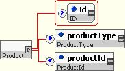
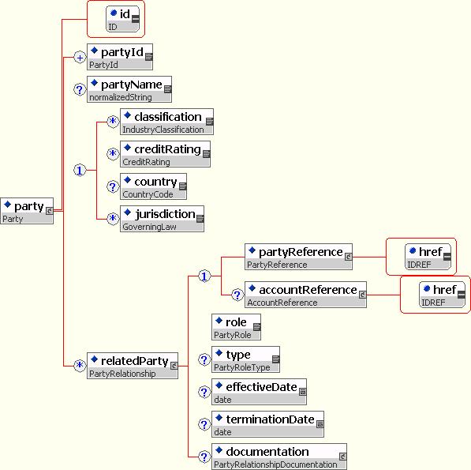
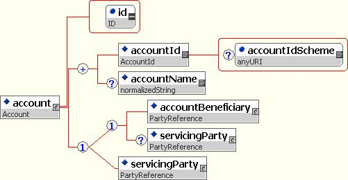
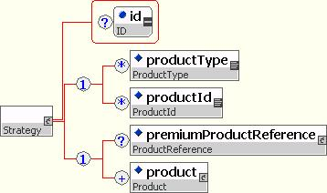

2.1 FpML
FpML is designed based on a number of key principles and conventions. Some of these include:
- Use XML's structuring ability to create reusable building blocks.
- Follow naming and structuring conventions to create a more consistent XML appearance.
- Where possible, share definitions across products and asset classes.
- Minimize evolution in instance documents from version to version.
Although these basic principles have consistently been observed, over the life of the specification there has been some evolution in the details, and as a result there have been some changes in the appearance of FpML. A number of these changes have been introduced to take advantage of the power created by XML schema. The original version of the FpML Architecture is located at FpML Architecture 1.0. The latest version of the FpML architecture principles is described in detail in the FpML Architecture 3.0. That document discusses how to create and extend FpML definitions.
The remainder of this section is intended to describe how the architecture principles were applied in developing FpML, and how to use the resulting spec. Please see the end of this section for a fuller explanation of the motivation for the FpML design approach.
With FpML 5-0 , FpML has been divided into several very closely related schemas to better support different types of business processes. Each of these schemas, called a "view", has a distinct namespace and element and type definitions. However, each view is built from the same source schema, and so shares a number of features, such as element names.
The following features are the SAME across all views:
- Element names
- Type names
- Product names
- Available product features, and the representation of those features
- The FpML version
The following features are DIFFERENT in different views:
- The intended usage of the standard, i.e. the types of business processes that it will be used for
- The list of available business processes and messages
- The "cardinality" of elements within a product or message (i.e. whether they are mandatory or optional)
- The exact list of supported products (may differ from view to view)
- The namespace
- The list of non-product features that are supported
In FpML 5-0, the list of supported views includes:
- Reporting: This view is intended to be used for reporting trading and business activities and positions (including as part of STP flows), as well as processes such as reconciliation. This view has a moderately loose product representation; it requires key economic information such as the notional, key dates, and parties, but leaves other information optional.
- Confirmation: This view is intended to be used for confirming the precise details of contracts and post-trade business events. This view is intended to have similar charactistics to the FpML versions 1-4 product representation, i.e. a very detailed product representation capturing the details needed for a transaction confirmation.
The rationale for the concept of "views" is to provide a consistent representation of key information across many types of business process, while allowing the set of mandatory and optional data to vary between processes. For example, when a firm reporting on an interest rate swap it may not provide information such as: payment date and reset date definitions on the floating side, or the business day adjustments that were used, etc. However, all of these pieces of information are crucial for confirming that swap once it is traded. So for confirmation view we want these pieces of information to be mandatory, while they are optional for pre-trade view.
A present, the concept of views is implemented as follows:
- A single "master" schema is maintained for all views
- This master schema includes a number of annotations using a simple syntax for overriding specific items (typically cardinalities) for a specific view.
- The published schema for each view is generated using an XSLT processing script from the master schema.
- ISDA publishes a separate schema and set of examples for each view.
In the reporting view, a firm reporting on an interest rate swap may provide the following elements:
- Streams for both the fixed and floating sides.
- Streams for both the fixed and floating sides.
- The absolute effective and termination dates.
- The payer and receiver party references for both sides.
- Calculation frequencies for both sides.
- The notional that was traded.
- The day count fraction on each stream.
Thus, the FpML for reporting on a 5-year USD-LIBOR-3M swap may look something as follows:
<swap>
<productType>InterestRateSwap</productType>
<assetClass>InterestRates</assetClass>
<swapStream>
<payerPartyReference href="hedge_global"/>
<calculationPeriodDates id="floatingCalcPeriodDates">
<effectiveDate>
<adjustedDate>2009-08-04Z</adjustedDate>
</effectiveDate>
<terminationDate>
<adjustedDate>2021-03-01Z</adjustedDate>
</terminationDate>
</calculationPeriodDates>
<calculationPeriodAmount>
<calculation>
<notionalSchedule>
<notionalStepSchedule>
<initialValue>623161.01</initialValue>
<step>
<stepDate>2009-09-01</stepDate>
<stepValue>617840.01</stepValue>
</step>
<!-- .... intermediate values removed -->
<step>
<stepDate>2021-01-01</stepDate>
<stepValue>9792.01</stepValue>
</step>
<step>
<stepDate>2021-02-01</stepDate>
<stepValue>5486.01</stepValue>
</step>
<currency>USD</currency>
</notionalStepSchedule>
</notionalSchedule>
<floatingRateCalculation>
<floatingRateIndex>USD-LIBOR-BBA</floatingRateIndex>
<indexTenor>
<periodMultiplier>1</periodMultiplier>
<period>M</period>
</indexTenor>
<spreadSchedule>
<initialValue>3.40</initialValue>
</spreadSchedule>
</floatingRateCalculation>
<dayCountFraction>ACT/360</dayCountFraction>
</calculation>
</calculationPeriodAmount>
</swapStream>
<swapStream>
<receiverPartyReference href="hedge_global"/>
<calculationPeriodAmount>
<calculation>
<notionalSchedule>
<notionalStepSchedule>
<initialValue>623161.01</initialValue>
<step>
<stepDate>2009-09-01</stepDate>
<stepValue>617840.01</stepValue>
</step>
<!-- .... intermediate values removed -->
<step>
<stepDate>2021-01-01</stepDate>
<stepValue>9792.01</stepValue>
</step>
<step>
<stepDate>2021-02-01</stepDate>
<stepValue>5486.01</stepValue>
</step>
<currency>USD</currency>
</notionalStepSchedule>
</notionalSchedule>
<fixedRateSchedule>
<initialValue>0.0711</initialValue>
</fixedRateSchedule>
<dayCountFraction>ACT/360</dayCountFraction>
</calculation>
</calculationPeriodAmount>
</swapStream>
</swap>
In confirmation view, a firm confirming a swap would include, in addition to the above, the following elements:
- Date adjustments.
- Payment date definitions.
- Reset date definitions on the floating side.
FpML is divided into several sub-schema files, which organize the definitions into smaller and more maintainable building blocks. These building blocks include:
- Core Definitions:
- All Views
- fpml-main-5-0.xsd - Root definitions.
- fpml-doc-5-0.xsd - Trade definitions and definitions relating to validation.
- fpml-shared-5-0.xsd - Shared definitions used widely throughout the specification. These include items such as base types, shared financial structures, etc.
- fpml-enum-5-0.xsd - Shared enumeration definitions. These definitions list the values that enumerated types may take.
- fpml-asset-5-0.xsd - Underlyer definitions plus some types used by them (e.g. ones relating to commissions or dividend payouts).
- All Views
- Products:
- All Views
- IRD
- fpml-ird-5-0.xsd - Interest rate derivative product definitions.
- CD
- fpml-cd-5-0.xsd - Credit derivative product definitions.
- EQD
- fpml-eq-shared-5-0.xsd - Definitions shared by types with Equity Underlyers.
- fpml-eqd-5-0.xsd - Equity Option and Equity Forward Product Definitions.
- fpml-return-swaps-5-0.xsd - Return Swaps Product Definitions.
- fpml-variance-swaps-5-0.xsd - Variance Swap and Variance Option Product Definitions.
- fpml-correlation-swap-5-0.xsd - Correlation Swap Product Definitions.
- fpml-dividend-swap-5-0.xsd - Dividend Swap Product Definitions.
- Bond Options
- fpml-bond-option-5-0.xsd - Bond and Convertible Bond Options Product Definitions.
- Options shared
- fpml-option-shared-5-0.xsd - Shared option definitions used for defining the common features of options.
- Commodity
- fpml-com-5-0.xsd - Commodity Swap and Commodity Option Derivative Poduct Definitions.
- IRD
- Reporting View
- Generic
- fpml-generic-5-0.xsd - Non Schema Product elements and types Definitions.
- Generic
- All Views
- Business Processes:
- All Views
- fpml-msg-5-0.xsd - Definitions related to messaging and workflow.
- fpml-credit-event-notification-5-0.xsd - Credit event notification components
- fpml-business-events-5-0.xsd - Business event notification components, such as creation of a trade, amendment, increase, termination and novation.
- Confirmation View
- fpml-confirmation-processes-5-0.xsd - Definitions of trade and post-trade messaging components such as execution, execution advice, trade change, consent negotiation, confirmation, clearing and allocation.
- Reporting View
- fpml-reconciliation-5-0.xsd - Cash flow matching and portfolio reconciliation messaging components
- fpml-reporting-5-0.xsd - Definitions of reporting messaging components such as position activity report , event activity report and reset report.
- Pricing and Risking:
- fpml-valuation-5-0.xsd – Valuation result sets and related definitions.
- fpml-mktenv-5-0.xsd – Definitions of market environment data structures such as yield curves, volatility matrices, and the like.
- fpml-riskdef-5-0.xsd – Definitions of valuation and sensitivity results. They include detailed definitions of sensitivity calculations and are intended to be used by sophisticated users.
- All Views
An FpML document can be either of two categories:
- A DataDocument is a document that contains only data, such as trades, parties, and portfolios. This structure is very similar to an FpML version 3 and 4 document. The DataDocument type is provided for those who do not wish to use FpML messaging features.
- A Message is a document that contains a message header and data elements specific to that message. In fact, an FpML message will always be of a more specific type derived from Message, such as "RequestTradeStatus". To learn more about FpML messaging, please see the Business Process section of this specification.
Before beginning to use FpML, an architect must answer several questions:
- How will the FpML be used? Is it primarily a messaging application, or primarily a data storage and retrieval application?
- If it is a messaging application, is there an existing workflow format that is used to coordinate interactions between the entities exchanging messages, or is a new one required?
- Will the FpML be used within a single institution, or across a number of institutions?
- What asset classes of products will be required?
- Will there need to be local data or product extensions?
- Are there any other XML schemas or DTDs the FpML needs to interact with?
If the application requires a new messaging layer, particularly if it will be used between institutions, the FpML messaging layer is recommended. If the application is primarily a data storage and retrieval application, the DataDocument type is available. For example, to store trades in an XML trade archive, and then retrieve them for a display or to generate, say, a confirmation, the DataDocument format will likely be sufficient. To implement a trade matching service between institutions, you should use the messaging layer.

In FpML 5.0, there is a different root element for each different message or document type. For example, a message to request that a novation be confirmed begins "<requestNovationConfirmation> ...", while a Data Document begins "<dataDocument> ...". Each different root element defines a structure that corresponds to the business requirements of that message or document.
The following short example illustrates this, using a "Request Quote" message from the pre-trade view:
<requestQuote
fpmlVersion="5-0"
xmlns="http://www.fpml.org/FpML-5-0/pretrade"
xmlns:xsi="http://www.w3.org/2001/XMLSchema-instance"
xsi:schemaLocation="http://www.fpml.org/FpML-5-0/pretrade ../fpml-main-5-0.xsd">
<header>
<messageId messageIdScheme="http://www.fpml.org/msg-id">123</messageId>
<sentBy>DEF</sentBy>
<sendTo>ABC</sendTo>
<creationTimestamp>2007-04-02T15:38:00-00:00</creationTimestamp>
</header>
<creditDefaultSwap>
<!-- details omitted -->
</creditDefaultSwap>
</requestQuote>
The simplest FpML document is a "DataDocument" (root='dataDocument'). This is similar to an FpML 3.0 document, and is described in the next section.
The FpML root element contains attributes that specify the FpML version (fpmlVersion='5-0' for FpML 5.0), the schema name and location, the namespace, and related properties. The "version" attribute from previous FpML versions has been renamed to "fpmlVersion" to provide an unambiguous indicator of the beginning of the FpML document that is not reliant on namespaces. Each different view has a different namespace. See the Architecture 2.1 specification for more details on this.
Since version 4.3, the FpML Schema has included a set of eCore annotations. These annotations improve the existing model by providing additional information that W3C Schema is not able to represent.
2.7.1 eCore
eCore is part of the Eclipse Modelling Framework. This is the modelling technology Eclipse based on a subset of UML.
eCore annotations add back the model information missing from XML Schema, specifically:
- The type of IDREFs
- Canonical namespace prefix
- Package names
- Root documents
In terms of implementation, the FpML Schema root element includes these additional attributes:
- the eCore namespace: xmlns:ecore="http://www.eclipse.org/emf/2002/Ecore"
- the canonical namespace prefix: ecore:nsPrefix="fpml"
- the package name: ecore:package="org.fpml"
- the root element: ecore:documentRoot="FpML"
In addition, the ecore annotations specify the specific target of an href attribute:
<xsd:complexType name="AccountReference"> <xsd:annotation> <xsd:documentation xml:lang="en">Reference to an account.</xsd:documentation> </xsd:annotation> <xsd:attribute name="href" type="xsd:IDREF" use="required" ecore:reference="Account"/> </xsd:complexType>
Benefits of eCore annotations include:
- FpML controls the object oriented models built from FpML
- The same OO model is shared, which is good for interoperability
- Modelling use now work with FpML
- Developers who can't unerstand XML Schema, can understand UML
- The FpML Schema is still valid and XML Schema tools are unaffected
More details about eCore annotations are available at: http://www.eclipse.org/modeling/emf/docs/overviews/XMLSchemaToEcoreMapping.pdf
There are a set of elements in FpML that are used across the different message types. These include elements such as trades, portfolios, events and parties.
2.8.1 The DataDocument type
As mentioned above, the structure of the FpML document depends on the "type" attribute. The simplest FpML document is a "DataDocument", which is similar to an FpML 3.0 document. The DataDocument is used to represent static data. A DataDocument looks like this:
It contains:
- Optional validation rules identification
- A trade or trades
- A portfolio or portfolios. Portfolios contain only trade references, if the trades themselves need to be included in the document then the trades can be included within the root element.
- An event or events
- A party or parties
Since the introduction of event in FpML 4.1, the content of "DataDocument" was constraint using "xsd:choice" to reduce the number of permutations between the different elements.
2.8.2 The Trade Component
The trade is typically a top-level component within an FpML root element. A trade is an agreement between two parties to enter into a financial contract and the trade component in FpML contains the information necessary to execute and confirm that trade.

2.8.2.1 tradeHeader
The information within tradeHeader is common across all types of trade regardless of product. In FpML 5.0 this element contains the trade date and party trade identifiers, as well as party-specific trade information.

2.8.2.1.1 Primary Trade Identifier
In FpML, there is no notion of primary trade or contract identifier. Trade identification is meaningful within the context of a party. That’s why the partyTradeIdentifier structure contains a partyReference element referencing a party. Within the structure, multiple tradeId or versionedTradeId elements can be specified. This is useful for allowing organizations with multiple systems, each one of them generating one or multiple trade identifiers, to be able to record that in the FpML message. Each system is identified by a unique value in the tradeIdScheme attribute.
<partyTradeIdentifier>
<partyReference href="INVM1"/>
<versionedTradeId>
<tradetId contractIdScheme="http://www.investmentmgm.com/coding-scheme/trade-id">CDI290204</tradetId>
<version>1</version>
</versionedTradetId>
<versionedTradeId>
<tradeId tradeIdScheme=”valuation-system/trade-id”>VS3456332</tradeId>
<version>1</version>
</versionedTradeId>
</partyTradeIdentifier>
In order to be able to process trade identification information, in absense of a central system, participants should decide on how to store the identification information of the trade:
- Recipients may choose to process all trade identifers and sources sent in a message and their relationship so in subsequent messages, the sender may send only one of the previous identifiers and the recipient may still be able to identify the trade.
- Recipients may choose to process a single trade identifier. In that case, participants must agree which system source is relevant, and ignore the others. Participants must exchange the tradeIdScheme values that are going to be relevant for processing. In the example above, the recipient may keep the trade id of ‘http://www.investmentmgm.com/coding-scheme/trade-id’ and ignore the other trade id.
2.8.2.2 product
Product is an abstract concept in FpML and an actual product element is not used. Instead, one of the FpML products will appear directly under trade.
{kind=link}
All FpML products inherit two optional elements from the Product type: productType and productId.
2.8.2.2.1 Product Identification
In order to identify the type of product contained within an FpML message, the Standards Committee encourages the use of structural analysis. Structural analysis is based on checking the presence of some specific elements within the message instead of relying on the value of a specific element such as productType.
The presence of some specific elements helps to define the product category of the transaction that is being sent. For example, the presence of the creditDefaultSwap and referenceInformation elements in a message is critical to categorize the product as single name credit default swap.
Product categorization using only the productType element value should be avoided. It should only be used by internal messaging implementations or by service providers. In both cases the code list is well-controlled and commonly understood by all participants.
2.8.2.3 otherPartyPayment
This component contains additional payments such as brokerage paid to third parties which are not part of the economics of a trade itself.

2.8.2.4 brokerPartyReference
The brokerPartyReference identifies the party or parties that arranged the trade.

2.8.2.5 calculationAgent
The calculation agent identifies the party or parties responsible for performing calculation duties, such as cash settlement calculations.

2.8.2.6 documentation
The documentation element defines where the legal definitions used for the trade are documented.

2.8.2.6.1 contractualMatrix
The contractualMatrix element is a generic mechanism for making references to ISDA-published matrices within an FpML trade definition.

Specifically it is designed to:
- Reference zero, one or more applicable matrices in a single trade definition.
- Identify the form of applicable matrix, e.g. the “2000 ISDA Definitions Settlement Matrix for Early Terminations and Swaptions” or “Credit Derivatives Physical Settlement Matrix” etc.
- Optionally identify the relevant version of the matrix through reference to its publication date (this is currently the mechanism recommended by ISDA). The publication date is optional since typically the incorporation language defines which version would be applicable based on the Trade Date of the relevant Transaction.
- Allow an additional term to be specified that acts as a “key” into the matrix for identifying the applicable sub-set of relevant data in the matrix. For example, in the case of the Credit Derivatives Physical Settlement Matrix the Transaction Type term identifies the applicable column of defaults in the matrix that is applicable to the Transaction. For the 2000 ISDA Definitions Settlement Matrix no additional terms need to be specified since the “key” into the matrix is the Settlement Currency which is already captured as part of the standard trade terms.
2.8.2.6.1.1 Examples of using the contractualMatrix structure
For Interest Rate Derivatives:
To specify that the July 1, 2004 version of the ISDA Definitions Settlement Matrix for Early Terminations and Swaptions is incorporated into the Confirmation:
<documentation>
...
<contractualDefinitions>ISDA2000</contractualDefinitions>
<contractualMatrix>
<matrixType>SettlementMatrix</matrixType>
<publicationDate>2004-07-01</publicationDate>
</contractualMatrix>
</documentation>
For Credit Derivatives:
To specify that the March 7, 2005 version of the Credit Derivatives Physical Settlement Matrix is incorporated into the Confirmation and that the applicable Transaction Type is North American Corporate:
<documentation>
...
<contractualDefinitions>ISDA2003Credit</contractualDefinitions>
<contractualSupplement>ISDA2003CreditMay2003</contractualSupplement>
<contractualSupplement>ISDA2003Credit2005MatrixSupplement</contractualSupplement>
<contractualMatrix>
<matrixType>CreditDerivativesPhysicalSettlementMatrix</matrixType>
<publicationDate>2005-03-07</publicationDate>
<matrixTerm matrixTermScheme="http://www.fpml.org/coding-scheme/
credit-matrix-transaction-type-1-0">NorthAmericanCorporate</matrixTerm>
</contractualMatrix>
</documentation>
2.8.2.7 collateral
The collateral element defines the collateral obligations of a party. The collateral element is an optional child of Trade and Independent Amount is a mandatory child of the Collateral element.
{kind=link}
2.8.2.7.1 independentAmount
Independent Amount was present at a Product Specific level, being both defined and used within Credit Derivatives. However, the concept of Independent Amount applies across products; it is the method of calculation which varies according to the type of Product. For this reason Independent Amount was moved to the trade level in version 4.1 Last Call Working Draft.
{kind=link}
PaymentRule is an abstract type defined for extension purposes. PercentageRule is a derived type from PaymentRule. It contains the payment percentage and a reference to the notional amount. Type substitution mechanism will be used in this case, which makes it extensible in case there is a need to add other calculation methods in the future.

The notionalAmountReference defines a reference to the notional amount. This reference is particularly useful in products like interest rate swaps, in which the leg of the notional needs to be specified. In order to accomplish that, an optional id attribute (IDREF type) has been added to the notional amount elements of the different products.
After some discussion, the Credit Derivatives Working Group decided that people will not use FpML without a CSA being signed, so a collateral party element is not necessary. The Collateral element itself should is a useful container for future work. The independentAmount element may not be required in the presence of CSA, but its optional inclusion should be supported for the avoidance of doubt, and expression of any variation from the CSA
2.8.2.8 governingLaw
The governingLaw element identifies which legal system will be used to enforce the contract.

2.8.3 The Portfolio Component
The portfolio component specifies a set of trades as a list of tradeIds and a list of sub portfolios. Portfolios can be composed of other portfolios using a composition pattern. By using the tradeId to identify the trade the standard allows for portfolios to be sent around without the full trade record.

2.8.4 The Party Component
The party component holds information about a party in involved any of the trades or portfolios included in the document. Parties can perform multiple roles in a trade lifecycle. For example, the principal parties obligated to make payments from time to time during the term of the trade, but may include other parties involved in, or incidental to, the trade, such as parties acting in the role of novation transferor/transferee, broker, calculation agent, etc. In FpML roles are defined in multiple places within a document.
It should be noted that an FpML document is not 'written' from the perspective of one particular party, i.e. it is symmetrical with respect to the principal parties. The particular role that a party plays in the trade, e.g. buyer, seller, stream payer/receiver, fee payer/receiver, is modeled via the use of references from the component where the role is identified (relatedParty structure) to the party component.
{kind=link}
This is a description of the elements:
- partyId: A party identifier, e.g. a S.W.I.F.T. bank identifier code (BIC).
- partyName: The name of the party. A free format string. FpML does not define usage rules for this element.
- relatedParty: Identifies a related party performing a role within the transaction.
Example:
...
<party id="SKY">
<partyId partyIdScheme="http://www.sky.org/coding-schem/code-id">SkyLTD</partyId>
<partyName>Sky Limited</partyName>
</party>
...
2.8.5 The Account Component
The Account component holds information about an account that represents any party's account at another party. Parties may be identified by the account at another party.
{kind=link}
This is a description of the elements:
- accountId: An account identifier. For example an Account number.
- accountName: The name by which the account is known.
- accountBeneficiary: The beneficiary of the account.
- servicingParty: A reference to the party that services/supports the account..
Example:
...
<account id="GEN478">
<accountId>47896325</accountId>
<accountName>Sky General Account</accountName>
<accountBeneficiary href="SKY"/>
</account>
...
2.8.6 The Product Component
The product component specifies the financial instrument being traded. This component captures the economic details of the trade. It is modeled as a substitution group; each asset class may create one or more product definitions. Some examples of products that different working groups have defined include:
- Interest rate swaps
- FRAs
- caps/floors
- swaptions
- Equity options
- Equity swaps
- Equity forwards
- Commodity swaps
- Commodity options
- Correlation swap
- Credit default swaps
- Dividend swap
- Variance swap
- Variance option
2.8.7 The Strategy Component
This component defines a special kind of product that allows the structuring of trade by combining any number of products within a strategy. A trade can be of a strategy rather than of a base product; this strategy can then in turn contain other products, such as multiple options. For example, you could define a strategy consisting of an FX call and an FX put to create a straddle or strangle, and then create a trade of that strategy.
This component also defines the simple strategies of strike spread and calendar spread for Equity Options
The Strategy component makes use of a composition pattern since strategy itself is a product. This means that strategies can themselves contain strategies.
{kind=link}
This section provides some additional background on the design of FpML.
2.9.1 Rationale for Structured Approach
FpML incorporates a significant level of structure, rather than being a 'flat' representation of data. This structuring is achieved through the grouping of related elements describing particular features of a trade into components. Components can both contain, and be contained by, other components.
An alternative approach would have been to collect all the required elements in a single large component representing a product or trade. A flat structure of this kind would capture all the relevant information concisely but would also constrain the model in two important respects, namely, ease of implementation and extensibility.
Grouping related elements into components makes it easier to validate that the model is correct, that it is complete and that it doesn't contain redundancy. This is true, both from the perspective of readability to the human eye, and also from the perspective of processing services. Processing services that do not need all the information in a trade definition can isolate components and be sure that the complete set of elements required, and only the elements required, is available for the particular process in hand.
Components additionally serve as the building blocks for a flexible and extensible model. Generally speaking, the complexity of financial products is a result of combining a few simple ideas in a variety of different ways. The component structure supports a trade content definition that is flexible enough to represent the wide variation of features found in traded financial instruments.
It should be noted that the application of the guiding principles of extensibility and ease of use has resulted in a different approach with regard to the forward rate agreement. Because this product is straightforward, commoditized and unlikely to develop further, the advantage to be gained from the extensive use of components is outweighed by the concision of a single component.
2.9.2 Component Framework
The optimum level of granularity is important to FpML. FpML separates the elements which collectively describe a feature of a product or trade into a separate component with each component serving a particular semantic purpose. Every grouping of elements in FpML is regarded as a component and each component is regarded as a container for the elements that describe that component. In the majority of cases each component will contain a mixture of other components and primitive elements, e.g. a date or string, that collectively describe the features of the component. Components are typically represented in the FpML schema as Complex Types.
Generally speaking, the lower level a component is, the more re-usable it will be. FpML makes use of a number of primitive entity components that describe the basic building blocks of financial products, for example, FpML_Money, FpML_AdjustableDate, FpML_BusinessCenters, FpML_Interval, FpML_BusinessDayAdjustments etc. These primitive components are re-used in different business contexts.
Primitive components are contained in higher level components that describe the features of particular products. For this reason these higher level components will tend not to be re-usable to the same extent. Examples within the definition of swapStream are the components required to construct schedules of dates such as calculationPeriodDates, resetDates and paymentDates. However, it should not be inferred from this that any fundamental distinction is drawn between components in usage or structure.
2.9.3 Coding Schemes
A necessary feature of a portable data standard is both an agreed set of elements and an agreed set of permissible values (the value domain) for those elements. An FpML document exchanged between two parties would not be mutually understandable if either or both of the parties used internal or proprietary coding schemes to populate elements. For FpML 4.0 the handling of coding schemes was changed from previous versions of FpML, with the introduction of the use of enumerations and the elimination of scheme default attributes from the FpML root element. The following description refers to the updated approach.
One possible means of identifying value domains is to include the domain of permitted values within the schema, using an XML Schema enumeration structure. This mechanism was adopted in FpML 4.0 for element values that satisfy the following criteria:
- The list of allowable values is relatively short.
- The list of allowable values is not expected to change during the lifetime of the specification
- It's not possible to change the list of allowable values without affecting the meaning of the specification.
This leave a number of lists of values not meeting the above criteria that are represented by "schemes". "Schemes" are lists of values that can be changed dynamically without affecting the schema. They include items such as currency codes, party identifiers, business centers, floating rate indexes, etc. For these data elements, the "scheme" is a URI, as identified in an FpML attribute, that designates the universe of acceptable values the element may take. This scheme definition list is typically encoded as an XML document, but does not in general need to be. In cases where the ISDA wishes to designate a default scheme, this is recorded as a default attribute value in the schema. In other cases, the scheme attribute is required.
For further details on the architectural framework behind Schemes, refer to the FpML Architecture Version 1.0 and Version 2.0 documents.